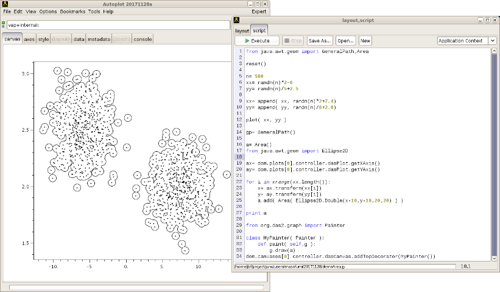

Autoplot Application (#{tag})
jnlp WebStart : Open JDK and Java 8 through Java 11 launch mechanism, 64-Bit Java will improve capabilities.
Single-Jar : .jar files can be launched on Windows and Mac, and contain a shell script for launching on Unix computers.
dmg: a self-contained installer for Mac computers.
exe: a self-contained installer for Windows computers.
Built with Install4J multi-platform installer builder and
deb and
rpm are available as well. Thanks, Install4J!

"|magnitude()" operation will delete the components and show the magnitude properly now. Here is the ticket.
Autoplot allows plotting of data from many data sources, including remote CDF files and HAPI servers.
Datasets are identified with URIs, and by the URI's extension, data are loaded into one uniform data model. Data are
then displayed by determining the rendering method and axis ranges to provide a useful display with interactive axes and
mouse actions. The data can then be further processed with other operations like smooth and FFT, and Jython scripting
provides a capable programming environment.
This is the Autoplot v2024a branch. This is an update to the production version containing bugfixes and minor new features.
Java 8 is required.
To run on 32-bit systems, use the single-jar release and a 32-bit version of Java.
Bugfixes (2024-11-08 r27905):
- Codes which transfer data from one buffer to another do so in larger chunks now, using 8K buffers as Google suggests.
- Run Batch Tool uses 8 threads by default when multi-threaded runs are done. 32 was too many, even for a 48-core machine.
- Don't leave empty recent files in autoplot_data/bookmarks/
- CDF export has "majority" control for output with values "row" or "column"
- 2641: misconfiguration of mouse module meant box events received from keystrokes were incorrect.
- 2217: "|magnitude()" is added to vector time series support, switching from component traces to one magnitude trace.
- Restore missing tools.xml file.
- 2638: data tab and layout tab are now initially on for new installations, since this was confusing.
Older Bugfixes (2024-10-29 r27862):
- Back of PDS4 library which has issue with existing file.
- Das2 TimeParser library gets $N to keep in sync with URI_Templates.
- Add support for byte arrays to IDLSave files, thanks Sadie!
- "Fourier Filters" area renamed to "Fourier Spectra", thanks Connor!
- Old QStream and QDataSet projects (not the ones in dasCore) are removed because they broke the JavaDoc generation and were not used.
- 0143: format to ASCII now checks timetag FORMAT property.
- Mash-up tool now has 3-argument add function for readability, expression area is larger now. Thanks, Darrelle!
- 2625: improve feedback when getDataSet arguments cannot be used.
- 112: Slowness with https://github.com/autoplot/dev/blob/master/bugs/sf/2619/demo2619.jy, caused by excessive dataset metadata handling.
- 2619: PWD is now set when loading remote .vap files with AutoplotServlet.
- 2631: include examples in timerange droplist for scripts.
- 2615: check that the appended name isn't irrelevant to the completion.
- NullPointerException in CSV format fixed. Add format GUI for CSV output. Thanks, Sadie!
- Rename ScriptPanelSupport to AppScriptPanelSupport so that it doesn't get confused with ScriptPanelSupport within JythonSupport.
- 2626: cancel close because of unsaved script edit when second AutoplotUI is running. Thanks, Sadie!
- allow https://cottagesystems.com/jenkins/job/autoplot-javadoc/lastSuccessfulBuild/artifact/doc/ to be used for pop-up documentation in script editor.
- add "append" checkbox to IDLSave format editor panel, so that the feature is not hidden.
- 2628: properly calculate the number of bytes per item in integer arrays.
Features:
- Remove old HAPI local cache code, put in support for external HAPI cache mechanism (at
- Jython to Java conversion checks for struct.pack.
- units=enum or units=nominal to mean nominal data.
- Buffer sizes used to transfer data increased from 1024 bytes to 8*1024 bytes, possibly showing small performance gains.
- More enhancements to Python-to-Java converter while porting new IDLSave reader.
Less recent features:
- include Image4J library for reading .ico files. Look up HAPI server favicon.ico files.
- improve label propagation through pow(ds,2) and sqrt.
- Allow Jython addToSearchPath to use files outside of HTTP FileSystem, including Github releases.
- 818: support 1-byte integers in PDS3 files, MAC_REAL, and MISSING keywords.
Feedback on the function and quality of this release is greatly appreciated!
Data is input from:
- ASCII files (.dat,.txt)
- CSV files (.csv)
- Binary files (.bin)
- CDF files(.cdf)
- PDS4 files (.lblx)
- Excel spread sheets (.xls)
- das2Streams (.d2s or .das2Stream)
- HAPI Servers (vap+hapi:)
- CDAWeb data server (vap+cdaweb:)
- das2servers (vap+das2server:)
- QStreams (.qds) (serialized version of internal model QDataSet)
- Plasma Wave Group das2 Server
- NetCDF files (.nc,.ncml)
- HDF5 files (.h5,.hdf5)
- DODs servers (.dds)
- Cluster Exchange Format files (.cef)
- Fits Format Files (.fits)
- Images (.jpg, .png, .gif)
- Wav audio files (.wav)
autoplot.org is the website containing
more information than this launch page.